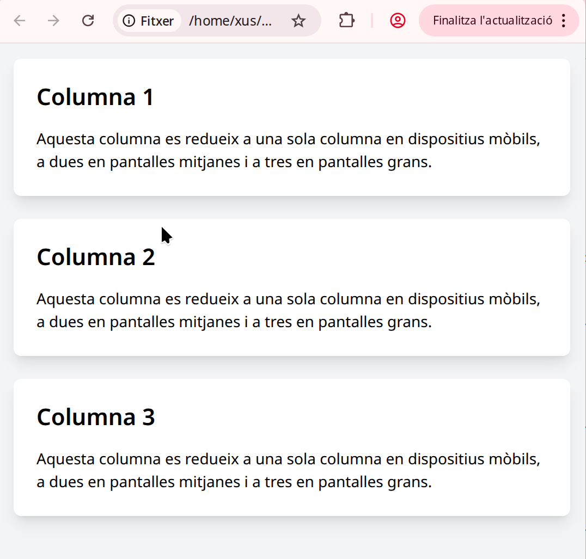
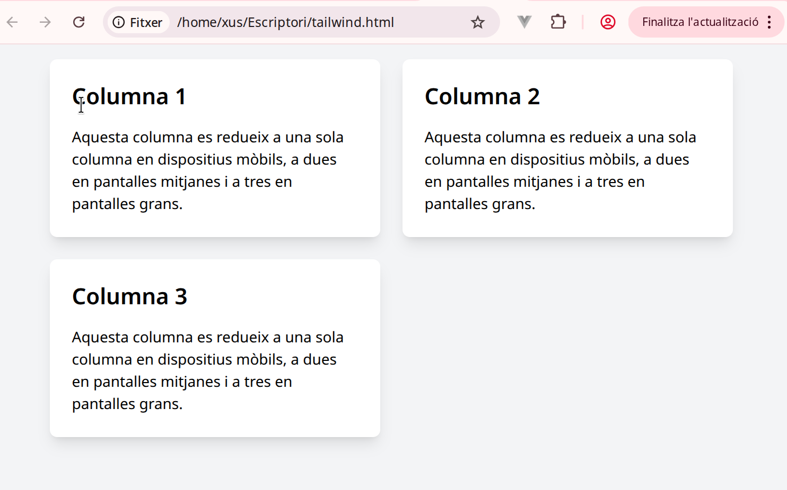
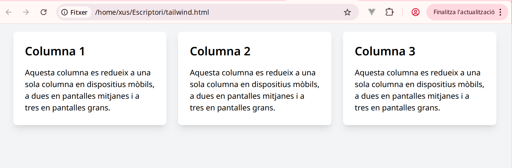

Dissenys responsius
Tutorial de Tailwind CSS: Creant un disseny responsiu de dues i tres columnes
En aquest tutorial, aprendràs com crear un disseny responsiu amb Tailwind CSS utilitzant dues i tres columnes. Utilitzarem el sistema de flexbox i grid de Tailwind per crear un layout flexible i adaptatiu que es redimensiona en funció de la mida de la pantalla.
Requisits:
-
Tailwind CSS instal·lat al projecte. Si no el tens instal·lat, segueix aquests passos:
-
Afegeix el CDN de Tailwind al teu projecte HTML dins de la secció
<head>(per a projectes ràpids o demostratius):
| HTML | |
|---|---|
- Si vols utilitzar Tailwind CSS localment, necessitaràs configurar-lo en el teu projecte amb npm o yarn i PostCSS.
1. Disseny de dues columnes responsiu amb Tailwind CSS
Primer, farem un disseny de dues columnes que es redimensionen en una sola columna en pantalles petites.
Exemple de codi HTML:
Explicació del codi:
grid: Utilitzem CSS Grid per a gestionar el disseny de columnes.grid-cols-1: Per defecte, a les pantalles petites (mida petita), utilitzem una columna.sm:grid-cols-2: A partir de pantalles petites en endavant (mida sm i més grans), utilitzem dues columnes.gap-6: Afegeix un espai entre les columnes.bg-white: Afegeix un fons blanc als elements.p-6: Padding (espai intern) de 1.5 rem als elements.rounded-lg: Aplica cantonades arrodonides als elements.shadow-lg: Afegeix una ombra gran als elements per fer-los més destacats.
2. Disseny de tres columnes responsiu amb Tailwind CSS
Ara farem un disseny de tres columnes que es redueixen a dues columnes en pantalles petites i a una columna en pantalles molt petites.
Exemple de codi HTML:
Explicació del codi:
grid-cols-1: Per defecte, a les pantalles petites (mida xs), utilitzem una columna.sm:grid-cols-2: A partir de pantalles petites (sm), es mostra dues columnes.lg:grid-cols-3: A les pantalles grans (mida lg), el layout passa a tres columnes.gap-6: Afegeix espai entre les columnes.bg-white,p-6,rounded-lg,shadow-lg: Estils per als elements de cada columna, igual que en l'exemple anterior.
3. Disseny complet amb tres columnes que canvia a dues i després a una columna
Si vols un disseny complet que es redueixi de tres a dues i després a una sola columna, utilitzarem el mateix sistema de classes responsives però amb més condicions.
Exemple de codi HTML:
Explicació del codi:
grid-cols-1: A les pantalles petites, utilitzem només una columna.sm:grid-cols-2: A partir de pantalles petites (sm), es mostren dues columnes.lg:grid-cols-3: A les pantalles grans (mida lg), es mostren tres columnes.xl:grid-cols-3: A les pantalles molt grans (mida xl), també es mantenen tres columnes.



Responsius
Amb Tailwind CSS, podem crear dissenys responsius molt fàcilment utilitzant les classes utilitàries com grid-cols-1, sm:grid-cols-2, lg:grid-cols-3 i altres classes relacionades amb les mides de pantalla.
Els passos clau per fer-ho:
- Utilitzar Grid per a la disposició de columnes.
- Definir les columnes per a diferents mides de pantalla amb les classes de Tailwind com
sm:grid-cols-2ilg:grid-cols-3. - Afegir espai entre les columnes amb
gap-xigap-y. - Configurar la responsivitat per garantir que les columnes s'adaptin a la mida de la pantalla.
Aquestes tècniques t'ajuden a construir layouts flexibles i adaptatius utilitzant Tailwind CSS.